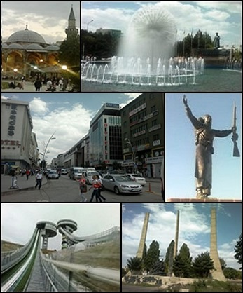

ISTANBUL
he first known name of the city is Byzantium (Greek: Βυζάντιον,
Byzántion), the name given to it at its foundation by Megarian
colonists around 657 BCE.[9][18] Megaran colonists claimed a direct
line back to the founders of the city, Byzas, the son of the god
Poseidon and the nymph Ceroëssa.[18] Modern excavations has raised the
possibility that the name Byzantium might reflect the sites of native
Thracian settlements that preceded the fully fledged town.[19]
Constantinople comes from the Latin name Constantinus, after
Constantine the Great, the Roman emperor who refounded the city in 324
CE.[18] Constantinople remained the most common name for the city in
the West until the 1930s, when Turkish authorities began to press for
the use of "Istanbul" in foreign languages. Kostantiniyye (Ottoman
Turkish: قسطنطينيه), Be Makam-e Qonstantiniyyah al-Mahmiyyah (meaning
"the Protected Location of Constantinople") and İstanbul were the
names used alternatively by the Ottomans during their rule.[20]
The name İstanbul (Turkish pronunciation: [isˈtanbuɫ] (About this
soundlisten), colloquially [ɯsˈtambuɫ]) is commonly held to derive
from the Medieval Greek phrase "εἰς τὴν Πόλιν" (pronounced [is tim
ˈbolin]), which means "to the city"[21] and is how Constantinople was
referred to by the local Greeks. This reflected its status as the only
major city in the vicinity. The importance of Constantinople in the
Ottoman world was also reflected by its Ottoman nickname Der Saadet
meaning the "Gate to Prosperity" in Ottoman Turkish.[22] An
alternative view is that the name evolved directly from the name
Constantinople, with the first and third syllables dropped.[18] Some
Ottoman sources of the 17th century, such as Evliya Çelebi, describe
it as the common Turkish name of the time; between the late 17th and
late 18th centuries, it was also in official use. The first use of the
word Islambol on coinage was in 1730 during the reign of Sultan Mahmud
I.[23] In modern Turkish, the name is written as İstanbul, with a
dotted İ, as the Turkish alphabet distinguishes between a dotted and
dotless I. In English the stress is on the first or last syllable, but
in Turkish it is on the second syllable (tan).[24] A person from the
city is an İstanbullu (plural: İstanbullular); Istanbulite is used in
English.[25]
BURSA
Bursa, Türkiye'nin bir ili ve en kalabalık dördüncü şehri. 2020 itibarıyla 3.101.833 [2] nüfusa sahiptir. 2016 Dünya Yaşanabilir Şehirler sıralamasında Dünya'da 28[3]. Türkiye'de 1. sırada yer almaktadır. Marmara Bölgesinin Güney Marmara bölümünde, 40° batı boylam ve 29° kuzey enlem daireleri arasında yer alır. Eski adı Hüdavendigâr'dır. Kuzeyinde Marmara Denizi ve Yalova, kuzeydoğuda Kocaeli ve Sakarya, doğuda Bilecik, güneyde Kütahya ve batıda Balıkesir illeri ile çevrilidir.
Erzurum
Erzurum, Türkiye'nin 81 ilinden biridir.[3] Erzurum ovasının güneydoğu kenarında, bu ova ile Palandöken dağının temas sahasında kurulmuş olan Erzurum şehri, 758.279 [2] nüfusu ile Doğu Anadolu Bölgesi'nin en büyük üçüncü ilidir. Denizden yüksekliği yaklaşık 1900 m olan Erzurum, tarihin ilk dönemlerinden beri yerleşim yeridir. Şehir, tarihî eserleri ve kış sporları tesisleriyle de tanınır. Yüz ölçümü bakımından Türkiye'nin en büyük dördüncü ili olan Erzurum'da, temel geçim kaynağı tarım ve hayvancılık olup şehir son yıllarda kış turizmiyle de öne çıkmaktadır. Soğuk iklimi sebebiyle sanayisi gelişmemiştir. 25.005 km² yüz ölçümüne sahip il arazisinin %15,17'si tarımsal amaçlı olarak kullanılabilir konumdadır.[4]